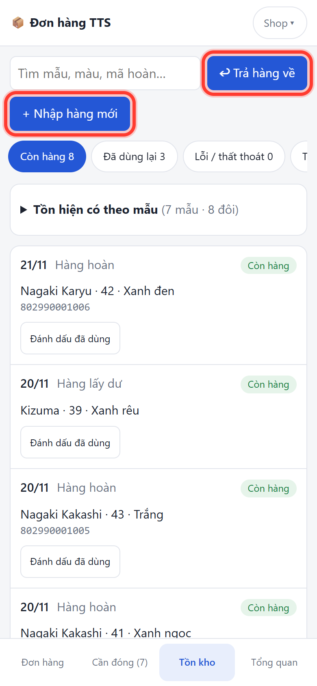
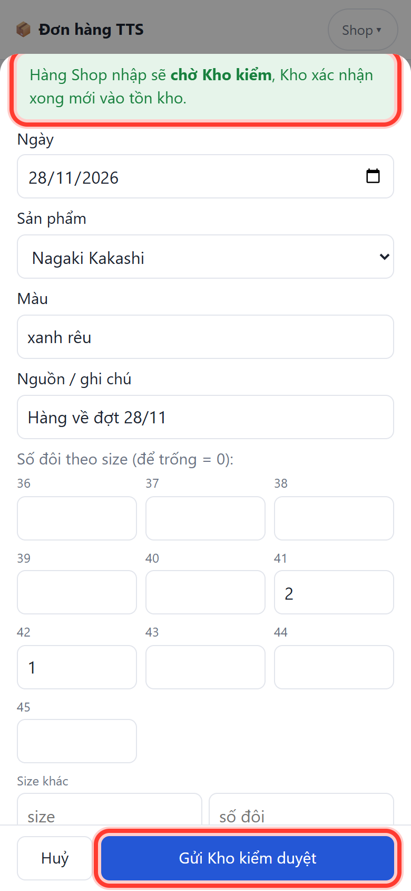
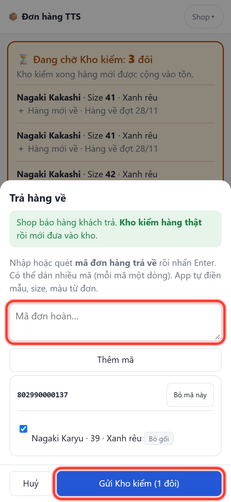
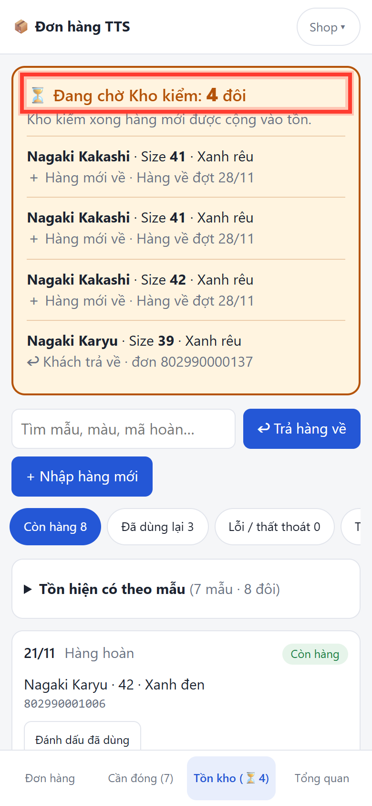
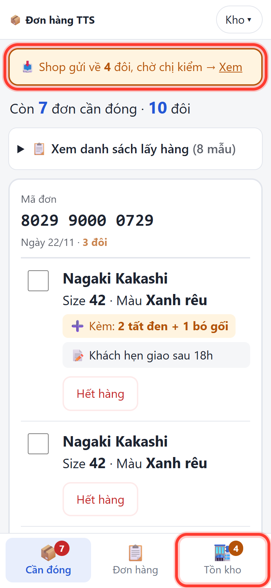
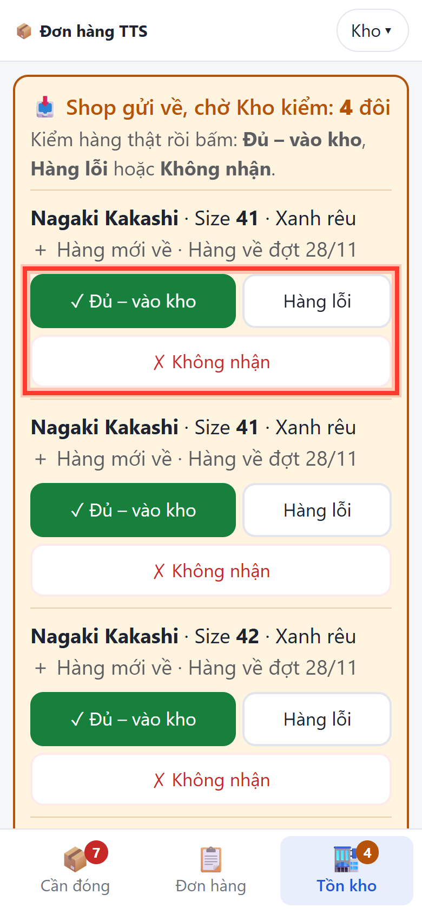
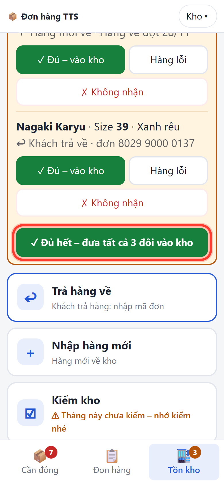
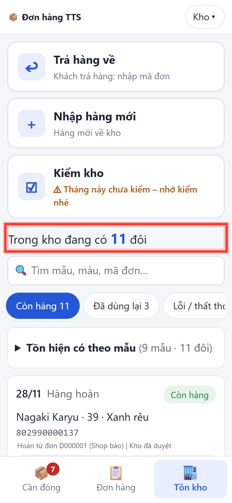
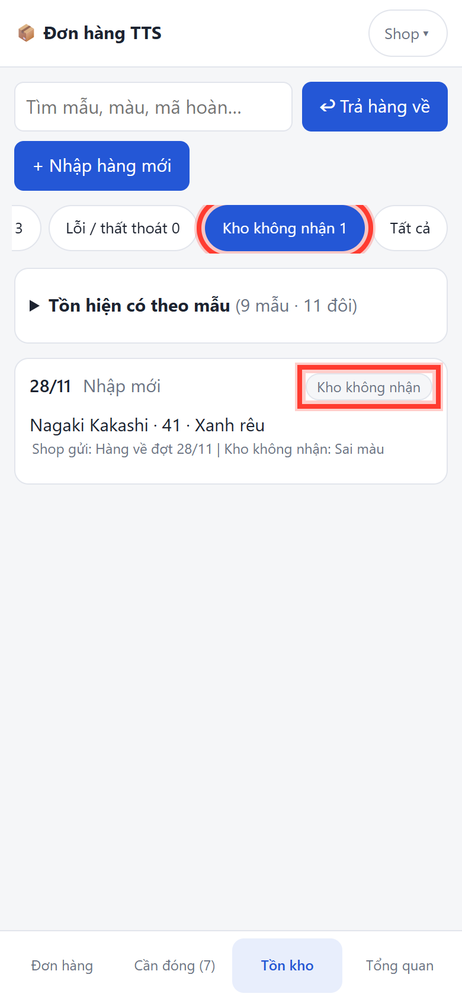

Hướng dẫn: Tính năng mới: Shop gửi hàng – Kho kiểm duyệt
Shop nhập hàng mới hoặc báo hàng khách trả về. Kho kiểm hàng thật rồi mới đưa vào tồn kho. Dành cho cả Shop và Kho.
Video có lời đọc tiếng Việt và phụ đề. Thời lượng khoảng 2 phút. Tải video về máy
1. Shop: hai nút mới2. Shop nhập hàng mới3. Shop báo hàng trả về4. Shop theo dõi5. Kho nhận thông báo6. Kho kiểm từng đôi7. Đủ hết thì bấm một lần8. Đã vào kho9. Shop xem kết quả
1. Shop: hai nút mới

- Shop vào tab "Tồn kho".
- Có 2 nút: "↩ Trả hàng về" (khách trả hàng) và "+ Nhập hàng mới" (hàng mới về).
2. Shop nhập hàng mới

- Bấm "+ Nhập hàng mới". Chọn mẫu, gõ màu, ghi chú (ví dụ: hàng về đợt 28/11).
- Gõ số đôi vào ô của từng size.
- Bấm "Gửi Kho kiểm duyệt". Hàng chưa vào tồn ngay, phải chờ Kho kiểm.
3. Shop báo hàng trả về

- Bấm "↩ Trả hàng về", gõ mã đơn, bấm "Thêm mã". App tự hiện mẫu, size, màu.
- Bấm "Gửi Kho kiểm". Shop không chọn Tốt / Lỗi, Kho sẽ kiểm hàng thật.
- Đơn vẫn giữ "Đã giao" cho tới khi Kho nhận hàng.
4. Shop theo dõi

- Đầu tab Tồn kho có khung cam "⏳ Đang chờ Kho kiểm: N đôi".
- Tên tab hiện "Tồn kho (⏳ N)". Kho kiểm xong mới cộng vào tồn.
5. Kho nhận thông báo

- Đầu màn hình "Cần đóng" có dòng cam: "📥 Shop gửi về N đôi, chờ chị kiểm → Xem".
- Nút "Tồn kho" ở đáy có số màu cam. Bấm vào dòng cam để đi tới chỗ kiểm.
6. Kho kiểm từng đôi

- "✓ Đủ – vào kho": hàng đúng, tốt → cộng vào tồn.
- "Hàng lỗi": hàng hỏng → ghi Lỗi, không tính còn hàng.
- "✗ Không nhận": không thấy hàng / sai mẫu. App hỏi lý do (có thể để trống).
7. Đủ hết thì bấm một lần

- Kiểm thấy đúng hết: bấm nút xanh lớn "✓ Đủ hết – đưa tất cả vào kho".
8. Đã vào kho

- Khung cam biến mất, "Trong kho đang có N đôi" tăng lên.
- Hàng trả về được nhận: đơn gốc chuyển sang "Đã hoàn".
9. Shop xem kết quả

- Đôi Kho không nhận có nhãn "Kho không nhận" và ghi lý do.
- Bấm nhãn lọc "Kho không nhận" để xem riêng các đôi này.
Shop gửi: hàng ở trạng thái "Chờ Kho duyệt"
Kho kiểm: Đủ – vào kho, Hàng lỗi, hoặc Không nhận
Kho duyệt xong mới cộng vào tồn
Đơn chỉ chuyển "Đã hoàn" khi Kho nhận hàng
Xem lời đọc của video (dạng văn bản)
Xin chào. Video này giới thiệu tính năng mới: Shop gửi hàng về, Kho kiểm duyệt rồi mới vào tồn kho.
Phần của Shop. Vào tab Tồn kho. Shop giờ có hai nút: Trả hàng về, và Nhập hàng mới.
Khi có hàng mới về, bấm Nhập hàng mới. Chọn mẫu, gõ màu, ghi chú nếu cần. Gõ số đôi vào ô của từng size. Rồi bấm Gửi Kho kiểm duyệt. Hàng chưa vào kho ngay, mà chờ Kho kiểm.
Khi khách trả hàng, bấm Trả hàng về. Gõ mã đơn, bấm Thêm mã. App tự hiện mẫu, size, màu. Bấm Gửi Kho kiểm. Shop không cần chọn hàng tốt hay lỗi, việc đó Kho sẽ kiểm.
Sau khi gửi, đầu tab Tồn kho có khung màu cam: Đang chờ Kho kiểm. Trên tab cũng có số đôi đang chờ. Kho kiểm xong, hàng mới được cộng vào tồn.
Phần của Kho. Mở app, ngay đầu màn hình Cần đóng có dòng màu cam: Shop gửi về bốn đôi, chờ chị kiểm. Nút Tồn kho ở dưới đáy cũng có số màu cam. Chị bấm vào dòng đó để xem.
Mỗi đôi Shop gửi có ba nút. Hàng đúng và tốt, bấm nút xanh Đủ, vào kho. Hàng bị hỏng, bấm Hàng lỗi. Không có hàng hoặc sai mẫu, bấm Không nhận, app sẽ hỏi lý do, có thể để trống.
Nếu kiểm thấy đúng hết, chị không cần bấm từng đôi. Bấm nút xanh lớn ở cuối: Đủ hết, đưa tất cả vào kho.
Duyệt xong, khung cam biến mất. Số đôi trong kho tăng lên. Hàng trả về được Kho nhận thì đơn đó chuyển sang Đã hoàn.
Shop xem lại ở tab Tồn kho. Đôi nào Kho không nhận sẽ có nhãn Kho không nhận, kèm lý do. Bấm nhãn lọc Kho không nhận để xem riêng.
Tóm lại. Shop gửi hàng thì hàng nằm ở trạng thái Chờ Kho duyệt. Kho kiểm hàng thật rồi bấm Đủ vào kho, Hàng lỗi, hoặc Không nhận. Chỉ khi Kho duyệt, hàng mới được cộng vào tồn, và đơn trả về mới chuyển sang Đã hoàn. Cảm ơn mọi người đã xem.